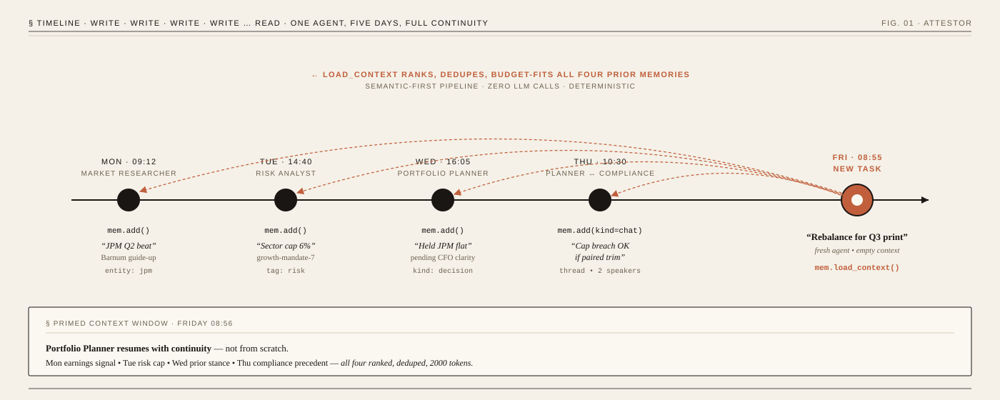
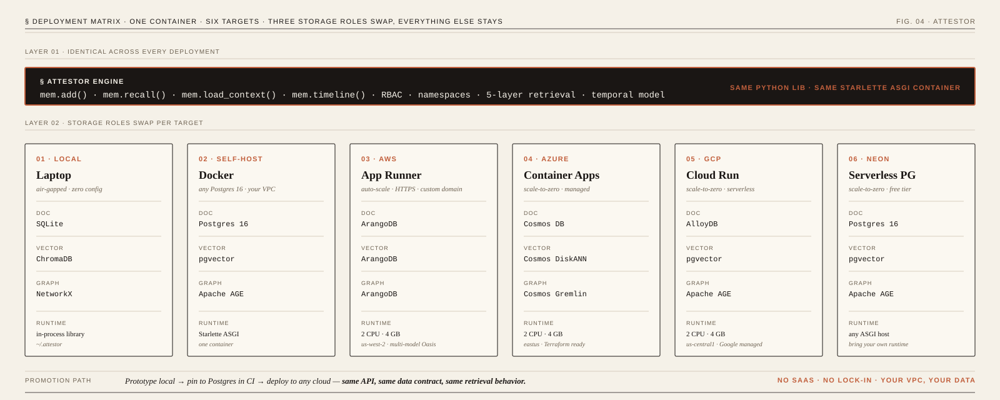
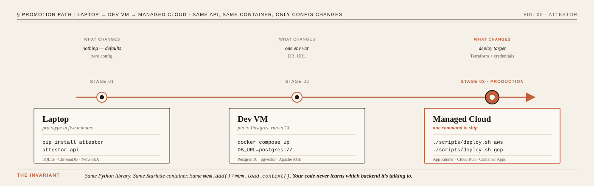

ATTESTOR — A MEMORY JOURNAL FOR AGENTIC SYSTEMSVOL. 02 · REV. 0.1EST. 2026 · NEW YORKMIT
§ 00 · MastheadFiled under InfrastructureBy Surendra Singh— For publication —
What did the agent know, and when did it know it?
Auditable memory for agent teams. Deterministic.Bitemporal. Self‑hosted, with no LLM in the critical path.
One tier your whole pipeline shares — planner writes, executor reads, reviewer sees both. Namespaces, RBAC, provenance, temporal correctness, ranked retrieval, token budgets — built in, not bolted on. Python library, REST API, or containerized service. No SaaS middleman. No per‑seat fees. No vendor lock‑in. It’s yours.
Eight hundred memories in the store. Six light up. Not the six it searched — the six this moment needs. Your planner’s decision from Monday. The researcher’s finding from Wednesday. The reviewer’s objection from yesterday. Ranked, deduped, fit to budget. Zero LLM calls in the critical path.
§ 00.1— The solution, in one pictureMemory accumulates · load primes
Memory accumulates. Load primes.
Four writes across Mon–Thu land as persisted memories. Friday morning a fresh Portfolio Planner wakes up to a new task, calls mem.load_context(), and Attestor ranks + dedupes + budget-fits all four back into the context window. The agent resumes with full continuity — earnings signal, risk cap, prior stance, compliance precedent.

Fig. 0.1 — Not RAG over documents. The agents’ own history, replayed into a fresh context.
§ 01— The ProblemWhy agent prototypes don't survive production
Every agent starts the day with amnesia.
Single agents rediscover the same facts every run. Multi-agent pipelines are worse — the planner’s decisions never reach the executor, the researcher’s findings never reach the reviewer. So teams do the only thing they can: stuff giant prompts between agents. Burn tokens. Hope nothing important fell off the edge. That’s not an architecture. That’s a workaround.
We had a planner, a coder, a reviewer, a deployer — four agents in a pipeline. None of them knew what the others learned. We were passing giant prompts between them and burning tokens on stale information.
Overheard · Engineering Lead, Fortune 100 Bank
Without Attestor
01Each agent starts blind — no knowledge of what others learned
02Giant prompts passed between agents burn context tokens
03No access control — any agent can overwrite any state
04Contradicting facts from different agents go undetected
05Session ends, everything learned is gone forever
With Attestor
01Shared memory — planner writes, coder reads, reviewer sees both
02Token-budget recall — each agent pulls only what fits
03Six RBAC roles, namespace isolation, write quotas per agent
05Persistent across sessions, pipelines, and agent restarts
Token cost per agent as memories grow
Fig. 01.1 · Lower is better
Month 1
2K
2K
Month 3
8K
2K
Month 6
15K
2K
Prompt-passingAttestor
More agents, more sessions, more memories — retrieval gets better while context cost stays flat.
§ 02— Built for teams, not chatbotsOrchestrator · Planner · Executor · Reviewer
Not a chatbot plugin. Infrastructure for agent teams.
Every recall and write is scoped to an AgentContext — identity, role, namespace, parent trail, token budget, write quota, visibility. Contexts are immutable. Spawning a sub-agent returns a new context with inherited provenance. Planner writes. Executor reads. Reviewer sees both. Every call authorised before it touches storage.
Fig. 1 — Agents talk to Attestor through Python, REST, or MCP. Storage is pluggable.
01 / 06
Namespace isolation
Every agent, project, or tenant gets its own namespace. Planner writes, coder reads, reviewer sees both. Isolated by default, shared when you configure it.
02 / 06
Six RBAC roles
Orchestrator, Planner, Executor, Researcher, Reviewer, Monitor. Read-only observers to full admins. Control who can read, write, or supersede in each namespace.
03 / 06
Provenance tracking
Know which agent wrote which memory, when, and under which parent session. The reviewer can trace a decision back to the planner three sessions ago — not some unknown source.
04 / 06
Cross-agent contradiction resolution
Agent A learns "user works at Google." Agent B learns "user works at Meta." Attestor auto-supersedes. Full history preserved. Zero inference calls in the critical path.
05 / 06
Token budgets per agent
recall(query, budget=2000) — a lightweight summarizer uses 500 tokens; a deep reasoner uses 5,000. Each agent receives exactly what fits in its context window.
06 / 06
Write quotas & review flags
Prevent a runaway agent from flooding the store with noise. Rate-limit writes per namespace, flag writes for human review, add compliance tags for audit.
§ 03— The Retrieval PipelineSemantic-first · zero inference calls
Semantic-first. No LLM. Fully deterministic.
When an agent calls recall(query, budget), six cooperating steps find, narrow, rank, diversify, decay, and fit the most relevant memories into the requested token ceiling. Ten million memories in the store. Your context window never sees more than the budget. And because there’s no LLM in the path, the same query always returns the same ranking. You can unit‑test it.
§ Live trace · Recall pipelineIdle · auto-plays on scroll
Fig. 3 — Live trace. Same pipeline. Ten memories or ten million. Replay it; it ranks the same.
01
Vector Top-K
Embed the query (local Ollama bge-m3 by default; cloud providers as fallback) and fetch the 50 nearest memories from pgvector by cosine similarity.
pgvectork=50 · cosine
02
Graph Narrow
BFS depth ≤ 2 on the entity graph from each candidate's entity to the question entities. Boosts hits by hop distance; penalises unreachable.
Neo4j + GDSBFS · depth ≤ 2
03
Triples Inject
Inject typed-edge triples (uses, authored-by, supersedes) as synthetic memories so consumers reason over relations, not just text.
Graph storetyped edges
04
MMR Diversity
Maximal Marginal Relevance rerank with λ=0.7 trades relevance against diversity, eliminating near-duplicate candidates while preserving topical coverage.
MMRλ = 0.7
05
Decay + Boost
Confidence decay penalises stale, low-confidence rows; temporal boost lifts recent writes. Optional BM25/FTS lane fuses with vector via RRF (k=60).
FusionRRF · k=60
06
Budget Fit
Greedy monotonic-by-score selection packs the surviving memories into the caller's token budget. The rest never enter context.
Greedytoken pack
Storage roles
Every memory is persisted across three complementary stores. Every supported backend combo is just a different technology choice for one or more of these roles.
ROLE · 01
Document store
Source of truth. Content, tags, entity, category, timestamps, provenance, confidence. Where add() commits and recall() hydrates final text.
ROLE · 02
Vector store
Dense embedding per memory, keyed by memory ID. Finds memories by meaning when no tag or word overlaps the query.
ROLE · 03
Graph store
Entity nodes + typed edges (uses, authored-by, supersedes). Query “Python” can surface “Django” via the graph.
The three writes commit as one logical transaction. On SQL backends it’s a real DB transaction; on distributed backends it’s sequenced with best-effort rollback.
Each step takes the previous step’s candidate set as input. Only memory IDs travel until the final budget-fit step hydrates the keepers from the document store. A store with ten million rows still returns a tight result set inside the caller’s token ceiling.
And three things most of the industry skipped.
Isolation. Temporal correctness. Provenance. Not features we bolted on. Primitives we started from.
PILLAR · 01
Isolation
Every memory lives inside a namespace. Every agent is bound to one of six roles. Every call is authorised before it touches storage. Enforced at the row level, not in application code.
→ORCHESTRATOR · spawns sub-agents →PLANNER · writes decisions →EXECUTOR · runs the work →RESEARCHER · gathers facts →REVIEWER · audits decisions →MONITOR · observability only
PILLAR · 02
Temporal
Attestor doesn’t overwrite. It supersedes. Every fact has a validity window. The timeline is replayable to any point in the past.
v1 JPM CFO is Jeremy Barnum valid_from: 2022-05 ↓ superseded v2 JPM CFO is Jane Doe valid_from: 2026-04-11 ↓ superseded v3 Appointment delayed valid_from: 2026-04-12
Ask recall(as_of=…) to replay the past. Nothing is deleted. Auditors can reconstruct what the desk knew and when.
PILLAR · 03
Provenance
Every sentence the agent writes back is traceable to its source. A cryptographic chain from raw feed ingest to grounded answer.
The citation isn’t a string the LLM chose. It’s the memory_id carried through the pipeline. Click it, land on the raw wire, verify the hash. Grounded, not plausible.
§ 03.5— Multi-LLM cooperationMany models · one auditable memory
Many LLMs, one memory. Conflicts resolved on contract, not vibes.
Real agent teams have a planner, an executor, and a reviewer — often on different model families. They write to the same memory store. Without a contract for how those writes interact, you get duplicate facts, lost edits, and silent overwrites. Attestor ships five mechanisms that turn multi-LLM writes into an auditable transaction log.
MECHANISM · 01
Write-time supersession
Deterministic. Zero LLM in the loop. On every add(), attestor checks for active rows with the same (entity, category, namespace) and different content. Each match is auto-marked superseded with valid_until=now and superseded_by=<new_id>.
# add() ↓ check_contradictions(memory) ↓ store.insert(memory) ↓ for old in contradictions: supersede(old, memory.id)
Old facts are never deleted. recall(as_of=…) still returns them.
MECHANISM · 02
Four-decision conflict resolver
For conversation ingest, every newly extracted fact gets one of four decisions from the LLM. Each carries an evidence_episode_id — every supersession is auditable.
ADDno existing match — write freshUPDATErefined value, keep idINVALIDATEold contradicted — mark supersededNOOPalready represented — skip
Failsafe: any LLM/parse failure falls back to ADD-by-default. Better a duplicate-ish row than a silent drop.
MECHANISM · 03
Speaker-locked extraction
Two passes per round, with separate prompts. User-turn extractor only emits facts attributable to the user; assistant-turn extractor only emits facts the assistant introduced. Stops cross-attribution — the “Mem0 +53.6” fix in our LongMemEval scores.
user turn →extract_user_facts(turn) ↓ speaker = "user"
Periodic synthesis across a user’s recent facts. One LLM call distills many episodes into structured outputs:
stable_preferences — patterns appearing in 3+ episodes
stable_constraints — rules the user repeatedly invokes
changed_beliefs — preferences shifted (old → new)
contradictions_for_review — flagged, not auto-resolved
Hard contradictions in regulated chat systems must be a human decision — the prompt is explicit: do NOT auto-resolve.
MECHANISM · 05
Dual-judge benchmarking — anti-collusion by construction
Every LongMemEval answer is scored by two independent judges from different model families — the second judge anchors out answerer-judge collusion. Same model judging its own answer rewards itself; cross-family judging surfaces real disagreement.
JUDGE 01
openai/gpt-5.2
vs cross family
JUDGE 02
anthropic/claude-sonnet-4.6
The scripts/lme_smoke_local.py driver runs this exact dual-judge stack against your install. See the Quickstart » Smoke benchmark tab.
PROVENANCE INVARIANT
Every memory carries agent_id, session_id, and source_episode_id. Every supersede writes the prior id into superseded_by. Cryptographic signing is opt-in (Phase 8.1). The result: any disputed answer can be traced back to which agent wrote which fact, when, and what it superseded.
§ 04— Deployment MatrixYour cloud · your infrastructure · Terraform included
Same API. Every backend. Your infrastructure.
One Python library. One Starlette ASGI container. Six deployment targets — laptop, dev VM, AWS, Azure, GCP, on‑prem. The three storage roles swap per column. Your agent code never learns which backend it’s talking to. Terraform templates live under agent_memory/infra/. Clone. Set your variables. terraform apply.
Starlette ASGI on http://localhost:8080. Run attestor setup local to bring up Postgres 16 + Neo4j (with GDS) via the bundled Docker Compose. Point every agent in your stack at the same URL — they share memory instantly. No SaaS. No API keys. Air-gap it behind your firewall and walk away.
Cloud · 01
AWS
App Runner with Starlette ASGI. Auto-scaling, HTTPS, custom domains.
2 CPU · 4 GB · us-west-2
Cloud · 02
Azure
Container Apps with Cosmos DB DiskANN. Scale-to-zero. Same API, same results.
2 CPU · 4 GB · eastus
Cloud · 03
GCP
Cloud Run with AlloyDB. Scale-to-zero. Google's managed infrastructure.
2 CPU · 4 GB · us-central1
Backend · 04
PostgreSQL
pgvector + Apache AGE. Neon serverless or any Postgres 16.
Doc · Vector · Graph
Backend · 05
ArangoDB
Multi-model: graph + document + vector in one engine. Oasis or self-hosted.
Native graph traversal
Backend · 06
Local / On-Prem
Postgres + pgvector + Neo4j via Docker Compose. Air-gapped deployments. Full data sovereignty.
No network egress
Same container. Pluggable stores.
One Attestor image. Six targets. The three storage roles swap per column. That’s the whole trick.

Fig. 4 — DocumentStore, VectorStore, GraphStore — three interfaces. Every column is one triple of implementations.
Docker · any cloud Doc: Postgres 16 Vec: pgvector Graph: Apache AGE
LANE · 03
AWS
App Runner All 3 roles: ArangoDB Oasis one engine
LANE · 04
GCP
Cloud Run All 3 roles: AlloyDB + pgvector + AGE
LANE · 05
Azure
Container Apps All 3 roles: Cosmos DB DiskANN
Every deployment is the same Python library wrapped in the same Starlette ASGI container. DocumentStore, VectorStore, and GraphStore are three interfaces; each column above is one implementation triple.
Promotion path — laptop to cloud, no rewrite.
Prototype on a laptop. Promote to Docker Compose on a dev VM. Promote to a managed container runtime. Same API throughout. Only the storage URLs change.

Fig. 5 — The same rail runs under every stop. The code never learns which cloud it’s on.
Three shapes. Pick by blast radius.
Same engine. Same storage. Same retrieval. Different coupling. Pick by latency budget and how many agents share the tier.
MODE A
Embedded library
AgentMemory(’./store’) in‑process. Sub‑millisecond. Right for a single agent prototyping on a laptop.
Latency · lowest
MODE B
Sidecar container
attestor api on localhost:8080. Any language. Go or Rust agents call HTTP without Python in the image.
Isolation · process
MODE C
Shared service
One Attestor service in front of an agent mesh. App Runner · Cloud Run · Container Apps. Managed storage behind. This is the production shape.
Scale · multi‑agent mesh
Code path is identical across all three. Only configuration changes.
— And one more thing —
For Claude Code, it’s three words.
Not a config file. Not an MCP setup guide. Three words in your terminal. Attestor interviews you, installs itself, wires the hooks, and runs a health check before you’ve put the kettle on.
install agent memory⎘
Paste into Claude Code · global or project scope · auto‑merges MCP config
§ 05— Or do it yourself, in three linesPython library · REST API · MCP protocol
Three lines of Python. That’s the integration.
Same call surface whether Attestor runs in‑process on your laptop or behind a Cloud Run service. Pick the interface. Ship.
fromattestorimport AgentMemory
fromagent_memory.contextimport AgentContext, AgentRole
# Orchestrator context — root of a multi-agent pipeline
ctx = AgentContext.from_env(
agent_id="orchestrator",
namespace="project:acme",
role=AgentRole.ORCHESTRATOR,
token_budget=20000,
)
# Spawn sub-agents with inherited provenance
planner = ctx.as_agent("planner", role=AgentRole.PLANNER)
planner.add_memory("Use event sourcing for the order service",
category="technical", entity="order-service")
# Executor reads what planner wrote — same namespace, ranked recall
executor = ctx.as_agent("executor", role=AgentRole.EXECUTOR)
results = executor.recall("order service architecture", budget=2000)
# Run as a REST API (Starlette ASGI + Uvicorn)$ attestor api --host 0.0.0.0 --port 8080# Same container ships to AWS App Runner, GCP Cloud Run,# or Azure Container Apps. Terraform templates in attestor/infra/.# Eight endpoints, Terraform included:# POST /add /recall /search# POST /timeline /forget GET /stats# GET /memory/:id /health# Envelope: {"ok": true, "data": {...}}
# Any MCP-compatible client (Claude Code, Cursor,# Windsurf, or a custom agent speaking stdio MCP)$ poetry add attestor# Add to your client's MCP config:
{
"mcpServers": {
"memory": {
"command": "attestor",
"args": ["mcp"]
}
}
}
# Agents get eight tools:# memory_add memory_recall memory_search# memory_get memory_forget memory_timeline# memory_stats memory_health
# Run a tiny LongMemEval smoke against your local install.# Defaults: dual-LLM cross-family judging + OpenAI embeddings.$ export OPENAI_API_KEY=...$ .venv/bin/python scripts/lme_smoke_local.py --n 2# Default stack (override any of these via env or CLI flag):# answerer : openai/gpt-5.2# judges : openai/gpt-5.2 + anthropic/claude-sonnet-4.6 (dual)# distiller : openai/gpt-5.2 (Mem0-style fact extraction on)# embedder : text-embedding-3-large @ 1024-D (schema-compat)# Swap any slot in one line — env var or CLI flag, your call:$ ANSWER_MODEL=openai/gpt-4.1-mini python scripts/lme_smoke_local.py --n 2$ python scripts/lme_smoke_local.py --judge-model openai/gpt-5.2 \ --judge-model anthropic/claude-haiku-4.5# Everything else is also configurable:# --embedding-model / --embedding-dim pin embedder + dim# --variant {oracle,s,m} --n N dataset slice + size# --parallel K --budget T concurrency + token budget# --no-distill turn off Mem0-style distillation# --pg-url postgres://… target a different Postgres
§ 06— Design PrinciplesOpinionated · on purpose
Five stakes in the ground.
What we won’t compromise on — no matter how loud the pressure gets.
Your data stays in your infrastructure. Self‑hosted, always.
Retrieval is deterministic. No LLM judges. No hidden inference in the path.
One recall(). Every backend. Swap without rewriting.
Agent teams are first‑class. Not a bolt‑on.
Boring where it counts. Proven, debuggable, no magic.
§ ∞— Available todayMIT · PyPI · MCP Registry
Point every agent at one URL. They share memory instantly.
MIT. Self‑hosted. Deterministic. Production deploy in one command. Designed and built by Surendra Singh — building auditable infrastructure for multi-agent AI, with fifteen years of production-systems discipline brought to the memory layer. Thank you.


{kind=link}